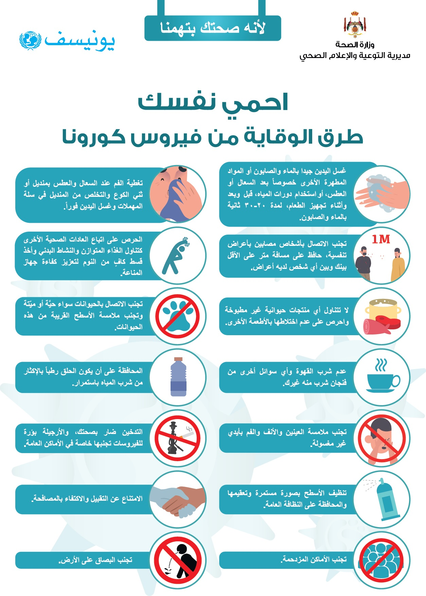

coronavirus
ف
للمساعدة في منع انتشار مرض كوفيد-19:
اغسِل يديك باستمرار. واستخدِم الماء والصابون أو محلولاً كحولياً لتعقيم اليدين.
ابتعِد مسافةً آمنة عن أي شخص يسعل أو يعطس.
ضَع كمامة عندما لا يكون التباعد الجسدي ممكناً.
لا تلمس عينيك أو أنفك أو فمك.
احرص على تغطية أنفك وفمك بكوعك أو بمنديل ورقي عند السعال أو العطس.
ابقَ في المنزل إذا شعرت بالمرض.
اطلب الرعاية الطبية إذا كنت مصاباً بالحمى والسعال وصعوبة التنفس.
يجب الاتصال بمقدم الرعاية الصحية قبل التوجه إليه ليتمكن من توجيهك بسرعة إلى مرفق الرعاية المناسب. ويساهم ذلك في حمايتك وتجنّب انتشار الفيروسات وغيرها من الأمراض.
الكمامات
يمكن أن تساعد الكمامات في منع انتقال الفيروس من الشخص الذي يرتدي الكمامة إلى الآخرين. مع ذلك، فإنّ الكمامات لا تحمي بمفردها من الإصابة بكوفيد-19، إنما يجب أيضاً
الالتزام بالتباعد الجسدي ونظافة اليدين. اتّبِع الإرشادات التي تقدمها السلطات الصحية المحلية.
